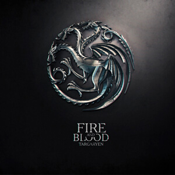
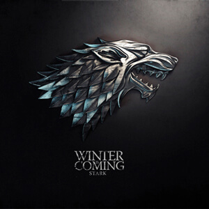

Game of Thrones
Game of Thrones es una exitosa serie de televisión basada en la serie de novelas "Canción de Hielo y Fuego" escrita por George R.R. Martin. La trama se desarrolla en un mundo ficticio dividido en varios reinos, donde varias casas nobles compiten por el Trono de Hierro y el control de los Siete Reinos de Westeros. La serie está llena de intriga política, traición, violencia y elementos fantásticos, como dragones y criaturas míticas. A lo largo de las ocho temporadas, se sigue a numerosos personajes, cada uno con sus propias ambiciones y lealtades, mientras luchan por el poder en un mundo lleno de conspiraciones y peligros. La historia se centra en la lucha por el poder y el destino del reino, con giros sorprendentes y personajes complejos que enfrentan desafíos épicos en su búsqueda de dominio.
Temporadas

Personajes
Daenerys Targaryen
Conocida por su linaje de los Targaryen y su determinación por reclamar el Trono de Hierro. Inicia como una joven tímida en el exilio y evoluciona en una líder empoderada y justa. Posee tres dragones, símbolo de su poder. Su historia se centra en la lucha por el poder y la liberación de esclavos.
Tyrion Lannister
A pesar de las adversidades que enfrenta debido a su enanismo, se distingue por su excepcional destreza política y habilidades estratégicas. Su carácter complejo y su sentido del humor lo convierten en uno de los personajes más queridos de la serie.
Jon Snow
A lo largo de la historia, se convierte en un líder en constante búsqueda de justicia y lealtad. Aunque inicialmente es conocido como el bastardo ilegítimo de la casa Stark, su carácter valiente y sus acciones lo llevan a ocupar roles cruciales en la trama.
Sansa Stark
Inicialmente, es una joven ingenua de la noble Casa Stark con aspiraciones de cuento de hadas. A lo largo de la serie, evoluciona en una mujer astuta y decidida que lucha por su familia y su hogar, Winterfell, en un mundo brutal y peligroso. Su transformación es un aspecto destacado de su personaje.
Joffrey Baratheon
Hijo de Robert Baratheon y Cersei Lannister, es conocido por su crueldad inhumana, su sadismo despiadado y su completa ausencia de escrúpulos. Su reinado se caracteriza por ser un oscuro período de opresión y caos desenfrenado que sumerge a los Siete Reinos en una profunda oscuridad.
Cersei Lannister
Integrante de la poderosa casa Lannister. Cersei busca el poder a toda costa y está dispuesta a usar la intriga y la manipulación para conseguir sus objetivos a cualquier precio. Su sed de poder la convierte en una figura siniestra y temida en los Siete Reinos.
Arya Stark
Desde temprana edad, muestra un espíritu independiente y una fuerte determinación. A lo largo de la serie, se embarca en un viaje de autodescubrimiento y venganza después de presenciar la traición y la muerte en su familia. Arya se convierte en una hábil asesina y cambia su identidad para sobrevivir y perseguir a aquellos que han dañado a su familia.
Casas
- 
- La Casa Targaryen, una antigua familia de sangre real originaria de Valyria, se estableció en Dragonstone antes de la Conquista de Aegon. Montaban dragones, lo que les dio poder sobre los Siete Reinos de Westeros durante casi tres siglos. Después de una serie de conflictos y luchas por el poder, la Casa Targaryen fue derrocada durante la Rebelión de Robert. Sin embargo, Daenerys Targaryen, la última heredera, renació como una figura poderosa y lideró una campaña para reclamar el Trono de Hierro, marcando así el intento de resurgimiento de su casa y su legado.
- La Casa Lannister de Roca Casterly es una de las familias más ricas y poderosas. Su riqueza proviene de las minas de oro en sus tierras. Liderados por Tywin Lannister, son astutos y ambiciosos. Cersei, su hija, se convierte en Reina, mientras que su hijo Jaime es un valiente caballero. Tyrion, el hijo menor y enano, se destaca por su inteligencia. Los Lannister se ven envueltos en intrigas, batallas y tragedias, pero su lema, "Oye mi rugido", refleja su determinación y ferocidad en la lucha por el poder en los Siete Reinos.
- 
- La Casa Stark de Invernalia, en el Norte de Westeros, es símbolo de honor y lealtad. Encabezada por Eddard "Ned" Stark y su esposa Catelyn, tienen cinco hijos: Robb, Sansa, Arya, Bran y Rickon, además de Jon Snow, el hijo bastardo de Ned. Su lema, "Se Acerca el Invierno", es un recordatorio constante de la amenaza del Norte. A lo largo de desafíos y tragedias, los Stark siguen siendo unidos, valientes y dedicados a proteger su tierra y su honor.
- La Casa Arryn del Nido de Águilas en el Valle de Arryn es conocida por su lema, "Tan Alto Como el Honor". Después de la muerte misteriosa de Jon Arryn, su esposa Lysa Arryn gobierna con una mano de hierro en nombre de su hijo, Robert Arryn. En su aislamiento en las altas montañas, han forjado un reino fuertemente defendido. A menudo olvidados. En las sombras, tejen intrigas y secretos, esperando el momento adecuado para influir en el destino de Westeros.
- La Casa Baratheon, con su lema "Nuestra es la Furia", emergió tras la rebelión contra los Targaryen. Robert Baratheon se coronó como Rey, acompañado por sus hermanos Stannis y Renly. Entre conflictos internos y ambiciones desbordantes, los Baratheon se destacan por su intensidad y determinación. Su historia está marcada por intriga, traición y batallas épicas, tejiendo un relato cautivador en el complejo juego de poder de Westeros.
-

- La Casa Martell se encuentra en la región de Dorne, en el sur de Westeros. Su lema es "Nunca Doblegado, Nunca Roto". Dorne es conocido por su clima cálido y su cultura distinta en comparación con otras regiones de Westeros. A lo largo de la serie, han mantenido su determinación y orgullo, incluso cuando enfrentaron desafíos significativos. Los Martell son apasionados y se enorgullecen de su herencia, y su liderazgo ha sido un factor clave en la historia política de Westeros.
- La Casa Greyjoy de las Islas del Hierro, en Westeros, tiene el lema "Nosotros no Sembramos". Son marinos feroces y han mantenido una tradición de independencia y rebeldía contra el dominio de las tierras continentales. Su ambición se centra en el control del mar y en las incursiones en las costas de otras regiones. Liderados por Balon Greyjoy, han desafiado el dominio del Trono de Hierro en dos rebeliones, destacándose por su cultura marítima y estilo de vida austero.
- La Casa Tully de Aguasdulces, en las Tierras de los Ríos, tiene el lema "Familia, Deber, Honor". Han sido leales a la Casa Stark del Norte y desempeñaron un papel crucial en la Guerra de los Cinco Reyes. Edmure Tully y su tío Brynden Tully, apodado "Pez Negro", son figuras importantes de la familia. Se destacan por su conexión con el río Tridente y su compromiso con la familia, el deber y el honor en el juego de tronos de Westeros.
- La Casa Tyrell de Altojardín, en las Tierras de la Tormenta, tiene el lema "Crecer Fuerte". Son conocidos por su riqueza y control sobre la agricultura en los Siete Reinos. Margaery Tyrell, una figura clave, utiliza su influencia para formar alianzas estratégicas y asegurar el poder para su casa en el juego de tronos de Westeros. Aprovechan de su influencia y recursos para asegurar su posición en el juego de tronos.
Mapa De Wasteros
¡Bienvenido a Westeros!
Adéntrate en los reinos de los Stark en el frío Norte, descubre los intrincados pasillos de Desembarco del Rey y maravíllate con la majestuosidad de los dragones de los Targaryen en el Este.
Lo que encontraras en el Universo de lucha por el Poder de GOT
Game of Thrones te sumergirá en un mundo repleto de desafíos, donde la valentía es tu mejor aliada.
¡Prepárate para vivir una épica aventura!